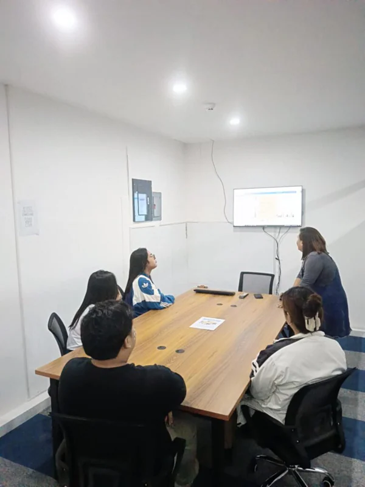

Career Growth
We invest in our employees’ professional development through training and mentorship.
Join a people-first team where ideas are heard, contribution is recognized, and every role can become a path forward.

We invest in the environment, support, and opportunities that help good people thrive.
We invest in our employees’ professional development through training and mentorship.
A collaborative and supportive culture where your ideas are valued.
Enjoy competitive salaries, incentives, and wellness programs.
Flexible work arrangements to help you thrive in your personal and professional life.
Select a role to view its responsibilities, qualifications, and full details.
Join our dynamic team at ACE Outsource Solutions! We are looking for motivated and results-driven Sales Representatives to help expand our business and connect with clients worldwide. If you’re passionate about sales, customer engagement, and driving growth, we want to hear from you.
Sales Representatives play a crucial role in driving business growth and customer satisfaction.
Apply for this role →Customer Service is responsible for assisting customers by addressing their inquiries, resolving issues, and ensuring a positive experience with a company’s products or services. It plays a crucial role in maintaining customer satisfaction, loyalty, and brand reputation.
Customer Service is essential for business success, ensuring that customers feel valued and supported.
Apply for this role →Join our creative team at ACE Outsource Solutions! We’re looking for a talented and innovative Graphic Designer to bring fresh ideas and visually compelling designs to life. If you’re passionate about design and have a keen eye for detail, this is the perfect opportunity for you.
Apply for this role →A Human Resources (HR) Officer is responsible for managing and overseeing HR functions within an organization. Their role ensures smooth workforce operations, compliance with labor laws, and a positive work environment for employees.
An HR Officer plays a vital role in maintaining a productive and motivated workforce.
Apply for this role →We are seeking a skilled Software Developer to join our dynamic team. The ideal candidate will be responsible for designing, developing, and maintaining high-quality software solutions. You will collaborate with cross-functional teams to deliver innovative and scalable applications that meet business requirements.
Apply for this role →A Marketing Manager is responsible for developing, implementing, and overseeing marketing strategies to promote a company’s products or services. Their goal is to drive brand awareness, generate leads, and increase sales through various marketing channels.
A successful Marketing Manager blends creativity with analytical thinking to ensure a brand’s success in the competitive market.
Apply for this role →A Data Entry Job involves entering, updating, and managing data in digital systems or databases. Data entry professionals ensure accuracy and organization of information, which is crucial for business operations.
Data entry jobs are ideal for individuals who are detail-oriented and proficient in handling information.
Apply for this role →We are seeking a dynamic, creative, and results-driven Marketing Manager to develop and implement effective marketing strategies, increase brand awareness, and drive business growth.
We are looking for a Full-Stack Developer with expertise in Laravel (Vite), Vue.js, Flutter, and Node.js to build and maintain a SaaS email platform with a Gmail-like email client across web, iOS, and Android.
The Sales Development Manager drives lead generation, manages sales operations, and develops strategies to acquire new clients in the BPO industry.
The online application connection is still being prepared. For now, send your application directly to the careers email below.
Location
Unit 2LS6, 2F Paseo 3A Bldg., Paseo de Sta. Rosa, Brgy. Don Jose, Santa Rosa, Laguna
Careers email
hr@ace-outsourcing.com